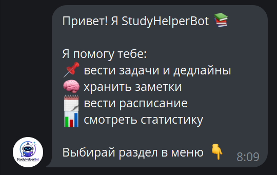

StudyHelperBot — вспомогательный инструмент для студентов: задачи, заметки и расписание прямо в Telegram.
В рамках учебной практики, параллельно с разработкой игры Steamleaf, был создан Telegram-бот на Python с использованием библиотеки Aiogram 3. Бот помогает студентам организовать учебный процесс: хранить задачи с дедлайнами, вести заметки и управлять расписанием — всё в одном месте, без лишних приложений.
Данные хранятся в локальной базе SQLite. Бот работает асинхронно и поддерживает inline-кнопки для удобной навигации по меню.
Добавление задач с дедлайном, просмотр списка, отметка выполненных и удаление. Бот напоминает о приближающихся дедлайнах.
Создание текстовых заметок, хранение конспектов и быстрый поиск по ключевому слову.
Добавление пар и занятий по дням недели. Просмотр расписания на конкретный день одной командой.
Подсчёт выполненных и невыполненных задач, общий обзор продуктивности за всё время использования.
Приветственное сообщение бота и пример диалога с ним.

Приветственное сообщение — краткое описание возможностей бота

Пример диалога — взаимодействие с командами бота
🐍 Python 3.11 — язык разработки
⚡ Aiogram 3 — асинхронный фреймворк для Telegram-ботов
🗄 SQLite + aiosqlite — база данных
🔑 python-dotenv — хранение токена в переменных окружения